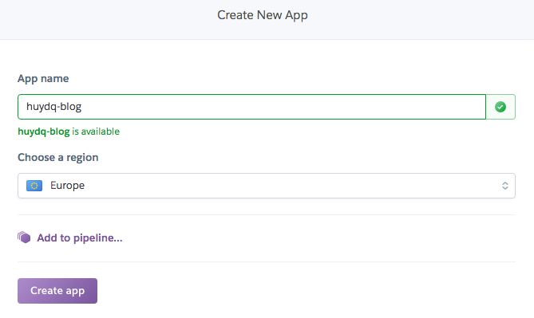
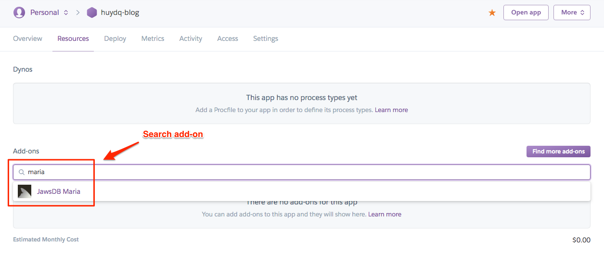
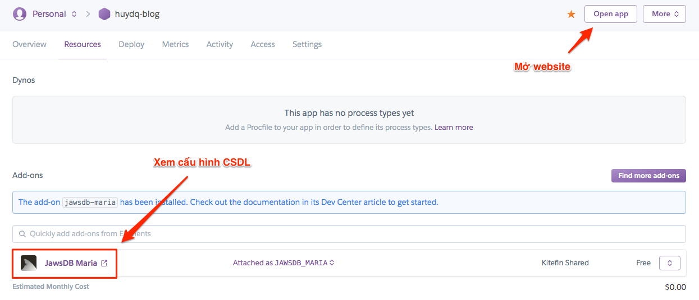

30/03/2019 / Bởi Đặng Quang Huy trong WordPress
Thông thường 1 trang web viết bằng WordPress có thể đẩy lên Internet qua Free Hosting, Share Hosting, VPS, ... Với những ai mới học mà muốn tiết kiệm chi phí thì thường dùng Free Hosting, nhưng Free Hosting thường là host nước ngoài, có rất nhiều hạn chế và hay bị lỗi. Trong bài viết này mình sẽ hướng dẫn các bạn tạo một website WordPress miễn phí trên Heroku và chức năng có thể sử dụng gần như thuê 1 con VPS vậy 😎.
-Tạo tài khoản trên https://heroku.com.
- Xác nhận tài khoản bằng cách thêm hình thức thanh toán (credit card). Chỉ là thêm hình thức thanh toán chứ không mất phí. Sau khi thêm xong thì sẽ được hưởng thêm rất nhiều quyền lợi và được sử dụng thêm các add-on như database (cần khi cài WordPress). Nếu ai không có Credit Card thì ra ngân hàng đăng ký rất nhanh (trước đây mình đăng ký làm 1 thẻ VISA MasterCard của ACB chỉ mất khoảng 5 phút).
- Tạo 1 app mới trong Heroku:
- Tải source code WordPress về và giải nén, ta được thư mục wordpress.
- Đẩy source code WordPress lên app vừa tạo bằng Heroku CLI:

- Tạo CSDL cho website bằng cách vào tab Resource, phần add-ons và thêm add-on JawsDB Maria (có thể dùng CSDL khác như JawsDB MySQL, ...). Chú ý chỉ có tài khoản đã xác thực (đã thêm Credit Card) thì mới thêm add-ons được:
- Sau khi thêm add-on JawsDB Maria thì bấm vào biểu tượng của add-on để chuyển qua trang cấu hình của add-on. Tại đây sẽ có hiển thị thông số để kết nối với CSDL:
- Bật website WordPress đã deploy từ trước lên và cài đặt với các thông số kết nối CSDL của add-on JawsDB Maria. Sau đó chúng ta đã có thể tận hưởng thành quả của mình 😄
Web developer tại Techmaster, có kinh nghiệm làm việc trong các dự án nước ngoài, dự án start up và các dự án mã nguồn mở. Sở thích ngoài lập trình: Đọc sách, bơi lội, nghe nhạc và du lịch.